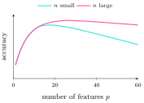

Statement
For a training set of size  per class, the expected test accuracy as a function of dimensionality
per class, the expected test accuracy as a function of dimensionality  has a maximum at a finite that grows with . With infinite samples, more features never hurt.
has a maximum at a finite that grows with . With infinite samples, more features never hurt.
Derivation
A Gaussian maximum-likelihood classifier estimates per class a mean ( values) and a covariance ():  parameters. For bands that is 20 300 per class; with a few hundred samples is singular (rank ) and its inverse meaningless. Estimation error grows with parameters/samples, while the separability gained by each new band shrinks: the two curves cross at the peak.
parameters. For bands that is 20 300 per class; with a few hundred samples is singular (rank ) and its inverse meaningless. Estimation error grows with parameters/samples, while the separability gained by each new band shrinks: the two curves cross at the peak.
Picture

than with many.Remedies
- feature selection (keep the most separable bands) or extraction (PCA, discriminant analysis);
- simpler models (common covariance, regularised );
- classifiers that control complexity rather than dimension (SVM);
- more labels: semi-supervised and active learning.
Intuition
Each new feature is another question the classifier must learn to interpret; with few examples it learns to interpret noise.
Pitfall
The effect is invisible on the training set, whose accuracy keeps rising with : only independent test data reveal the peak.